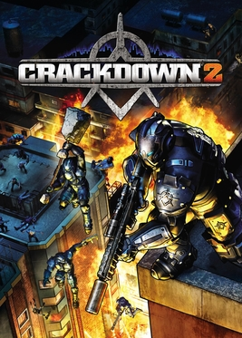

Crackdown 2
Crackdown 2
Details
|  | |
| Playtime | Not Played |
| Last Activity | Never |
| Added | 4/29/2025 7:31:29 |
| Modified | 5/1/2025 1:05:10 |
| Completion Status | Not Played |
| Library | Playnite |
| Source | |
| Platform | Microsoft Xbox 360 |
| Release Date | 7/6/2010 |
| Community Score | 88 |
| Critic Score | 70 |
| User Score | |
| Genre | Action-adventure |
| Developer | Ruffian Games |
| Publisher | Microsoft Game Studios |
| Feature | Multiplayer Single Player |
| Links | Wikipedia MobyGames |
| Tag | [People] artist: Chris Gottgetreu [People] artist: Paul Simms [People] artist: Ryan Astley [People] artist: Stuart Campbell [People] composer: Kevin Riepl [People] designer: Dean Smith [People] designer: Ed Campbell [People] designer: Steve Iannetta [People] director: Billy Thomson [People] producer: Gareth Noyce [People] producer: James Cope [People] programmer: Mike Enoch [People] writer: Rich Bryant |
Description
Crackdown 2 is a 2010 action-adventure game developed by Ruffian Games and published by Microsoft Game Studios. It was released for the Xbox 360 in July 2010 and is a direct sequel to the 2007 video game Crackdown. A sequel, Crackdown 3, was released for the Xbox One and Microsoft Windows in February 2019.
Gameplay
Crackdown 2 is modeled similarly to its predecessor Crackdown, a third-person shooter in open world gameplay. The player character is an advanced super-powered officer for the city-funded "Agency", known simply as the "Agent". This time around, players choose one of four faces and armor colours (eight colours if they pre-ordered it), instead of just the preset heads offered before. Along with that, the orbs have been carried on from the first game, and the Agent's powers are expanded and enhanced such as the Agility Skill which now allows the Agent to jump higher than in Crackdown, glide, and gain access to the helicopter landing pad at the Agency Tower. The player is able to commandeer any number of vehicles in the game, including Agency vehicles, Peacekeeper Cruisers and a large number of civilian vehicles that the Cell have armor plated. Checkpoint races are back, both Road and Rooftop versions. Like Crackdown, the game allows for online co-operative play in the main game, but now supports up to four players. The game also features competitive multiplayer modes for up to sixteen players. While the original Crackdown supported System Link playing for co-op, Crackdown 2 does not feature the same option. Microsoft Producer Peter Connelly stated: "It would've taken a half-day of work, for something that only a tiny percentage of gamers will ever use." In Crackdown 2, the player fights both the Cell, a terrorist organization, and "Freaks," strange infected mutants. Both organizations' members can be killed with melee attacks, explosions, and bullets but there are special UV weapons made for the Freaks, who cannot survive in sunlight. There are five skills to be leveled up: Agility, which the player increases by collecting Agility Orbs and Renegade Agility Orbs, by doing Rooftop Races, or by killing enemies from a highly elevated location; Firearms, which is increased by shooting both handheld and mounted guns; Driving, which is increased by running enemies over, power slides, handbrake turns, completing Road Races, jumping through Stunt Rings and collecting Renegade Driving Orbs; Explosives, which is increased by using explosives, both Launchers and thrown Grenades; and Strength, which is increased by using hand-to-hand attacks, throwing objects, beating people with those objects, or using the moves you unlock as your Strength increases, such as the Charge or Ground Slam.
Multiplayer
Multiplayer playlists include game modes such as Rocket Tag, Vehicle Tag, Capture the Orb, Deathmatch and Team Deathmatch.
A co-op game type allows you to party up with up to four friends. In co-op, you can obtain special orbs known as "Online Orbs" or "Xbox Live Orbs" which give an overall bonus to all your skills. Co-op mode is similar to single player except the campaign missions will only advance for the player that hosts the game.
Plot
Crackdown 2 takes place 10 years after the events of Crackdown. After "saving" Pacific City, there was a short time of peace. Then, according to the Agency, a new medical student named Catalina Thorne was accepted into the Agency as a scientist. However she was found to have been performing her own unauthorized experiments and was kicked out. Afterwards, her life was ruined, with her blaming the Agency. Later, she broke into the Agency cloning facility which housed the original agents, and introduced a virus into them which mutated the already genetically modified Agents, who became mindless and enraged, going on a killing spree before dying hours later. She then went on to destroy the research labs, sending the project back to square one and single-handedly destroying the Agent program.
Soon after, Catalina unleashed the "Freak" virus into the populace of Pacific City, turning the infected into mindless mutated monstrosities that kill anything they find. With no agents to combat them, the Agency and the city were left helpless as criminals also began to resurface in the absence of the agents and the weakness of the Agency. While the people were weaker and more desperate than ever, Catalina rallied their support, claiming the Agency has a cure for the virus but is keeping it secret. Desperate for hope, they formed the "Cell", a terrorist group devoted to destroying the Agency and making them give up the cure.
That's when the Agency unveiled Project Sunburst, in which a large bomb of direct sunlight is planted and detonated inside "Freak" lairs. The light is perfectly harmless to normal people, but the sunlight burns and destroys the Freaks. These bombs are dependent on generators to gather sunlight. Upon hearing of these generators and Project Sunburst, the Cell took over and stole the generators. The Agent must reactivate all of the absorption units, three per beacon for a total of twenty-seven. The Agent must visit each freak lair, summon air support with the beacon, and defend it against the freaks until it detonates.
During the final few beacons, Catalina Thorne hacks into the Agent's comm system and pleads with him to cease the beacon re-activations, but eventually is silenced by the Voice of the Agency. After the last beacon is detonated, the Agent must return to the Tower and activate the final beacon: the Tower itself. During the process, ex-agents turned into freaks, which were kept for research, break free and attack the three cores which must be defended by the Agent. After the beacon charges, Catalina herself attacks in a stolen and repainted Agency helicopter, firing at the core.
Ordered to stop her, the Agent, though damaged and bruised, leaps from the tower, firing at the helicopter as he falls. Catalina turns the helicopter when it is fired upon, causing the agent to hit the rotor blades rather than the cockpit. He is torn apart, sacrificing himself, succeeds in stopping Thorne. His hand lands in the helicopter as Thorne spins out of control away from the tower. The beacon fires and kills all remaining freaks in Pacific City, with the Voice of the Agency admitting he feels sorry for anyone who tries to stand in the Agency's way now. After the credits, a short video shows Thorne performing research, with the hand of the Agent in a test tube on the table in front of her. The downloadable content "Keys to the City" features the Agency after the events of Crackdown 2, now sporting newer and more advanced technologies, and the return of the Agent.
Alternate plot
The plot, as given above, is not necessarily the true story in the game. Audio Log collectibles found in the game give a different story, which paints the Agency as evil and manipulating, having engaged in a multi-step program to once again give the public a reason to accept unconditional control by their forces and cover up their own involvement in the events of the first game. This alternate story matches the twist at the end of the first Crackdown game.
Prior to the events of the game, the Agency, after taking control of Pacific City after the events of Crackdown, invites a group of Pacific City journalists and Agency whistleblowers to a press conference and destroys it, blaming it on terrorists. Thorne, a doctor who actually wants to help the Pacific City populace, attempts to open a clinic to give free medical care to the homeless, but "freaks" left over from a Pacific City super-gang (funded by the Agency, as revealed in Crackdown) invade the clinic and kill almost everyone; the Agency blames this on wild animals. Following this incident, Thorne attempts to lead protests against the Agency and call for an antidote to the freak virus, leading the Agency to blame Thorne for creating the freaks in the first place by infecting the homeless she claimed to treat at her clinic.
The Agency then walls off the infected area of Pacific City and secretly creates an antidote, but only uses it on their own agents; as a side effect, the agents lose their superhuman abilities, which the Agency again blames on Thorne. They then send undercover police to instigate violence at Thorne's peaceful protests, turning the public against her entirely. The Sunburst weapon is built to supposedly deal with the freaks, but is actually built as an antipersonnel weapon, meant to kill anyone who might oppose the Agency. Thorne, in an attempt to stop the Agency's plan, leads attacks by the Cell on the Sunburst bombs, giving the Agency a reason to send their Agents back into the field.
Development
Phil Wilson and Billy Thomson, respectively Producer and Lead Design of Crackdown had previously confirmed that the game was designed from the outset to be a long-running series, stating that sequels for the game are very likely to be produced, especially if Crackdown performed well commercially. However, during the Industry All Stars event in September 2007, Wilson confirmed that Realtime Worlds was not working on a sequel to the game, saying "Microsoft [was] a little late in stepping up to the plate to ask for Crackdown 2, and by then we had already started working on bigger, better things." However, then-Microsoft Game Studios corporate vice president, Shane Kim, stated that Microsoft still holds the intellectual property rights for Crackdown and that a Crackdown sequel was still a possibility.
Realtime's Studio Manager Colin MacDonald clarified that if they have the resources after completion of APB, they could approach Microsoft to discuss a sequel. Prior to its announcement, industry rumors stated that the new start-up company, Ruffian Games, a Scottish studio formed from members from the Realtime Worlds team, may be involved in the development of a Crackdown sequel. This was confirmed when the game was announced during the 2009 Electronic Entertainment Expo Conference. The rumors of Ruffian's involvement with the sequel were initially dismissed by McDonald, saying he doubted "Microsoft would harm an otherwise fruitful existing development relationship by gambling on funding Crackdown 2 with a startup on RTW's doorstep, for obvious reasons." Following the announcement, David Jones, founder of Realtime Worlds, stated he was "a bit miffed" with Microsoft's decision, believing that Microsoft may have been looking at an internal development studio instead of the new start-up located in the same geographical area as his company and formed of many of his team's former members. Ruffian's executive producer, Peter Connelly, agreed that the situation that caused Realtime Worlds to move onto APB was unfortunate, but hold no animosity towards the company. Ruffian's Thomson noted that about half of their team formerly worked on Crackdown across all areas of game development, and felt their studio was the best choice to make the game's sequel.
The team chose to keep the sequel located in Pacific City as they considered that setting had a character of its own in the first game and wanted to preserve that for the sequel to keep up its familiarity with players, while still making it "bigger and better". The team also sought to preserve the same free-form gaming experience from Crackdown and opted to avoid any significant dialog-driven cutscenes, while improving on parts of the gameplay from the first game that were seen as weaker aspects. There are no significant mechanical changes to the game, though Ruffian continues to improve on the rendering engine to allow the display of the large vista of Pacific City.
Reception
Crackdown 2 received "mixed or average reviews" according to the review aggregation website Metacritic. Jeremy Parish of 1Up.com praised the game for the four player Co-op; however, he states: "But everything else about Crackdown 2 is a letdown: The best parts are those lifted straight from the first game, while all the new additions are annoying at best, infuriating at worst. Crackdown 2 is ridiculously fun, but it owes that success entirely to the first game." GameSpot praised the game's exploration, orb collecting and four-player co-op, while also criticizing its similarities to its predecessor. IGN also faulted it for similarities to its predecessor and its absence of a true story, but complimented its orb collecting and cooperative campaign. Giant Bomb said that while the game was enjoyable, too much was lifted from the first game and little new was added. Destructoid gave the game a negative review, criticizing its similarities to the previous game, while also noting new issues not present in the original. The writer said that the game "has no real reason to exist." GameTrailers praised the game's addictive Orb collecting, but criticized its lack of story or structure. Official Xbox Magazine UK praised its four-player co-op, combat system, but criticized the layout of Pacific City for being too similar to its predecessor, as well as lack of transforming vehicle, but the author, Ben Talbot, still described the game "an addictive experience, and one that offers the best sandbox co-op this side of Saints Row 2". Ben Reeves from Game Informer criticised the game for being too similar to the original Crackdown, as well as unfinished texture work, unimpressive score, mindless enemy AI, as well as low replay value. He stated that the game is almost indistinguishable from the first Crackdown. In Japan, where the game was released under the name Riot Act 2 (ライオットアクト 2, Raiotto Akuto Tsu) on 8 July 2010 (the same release date as Australia's),[citation needed] Famitsu gave it a score of 30 out of 40.
The Escapist gave the game four stars out of five and said that it "offers hours of satisfying, brainless fun for those who enjoy that sort of thing. Newcomers to the series and die-hard fans alike will find plenty to obsess over." The A.V. Club gave it a B and said, "Dissing Crackdown 2 for its lack of narrative is too easy. A videogame shouldn't articulate everything. Games should be mysterious; something should always be left to the imagination." The Daily Telegraph gave it seven out of ten and said it was "immense fun, but this is thanks to the fact that its core gameplay remains largely unchanged from its predecessor. In a way, the game feels more like a slightly more evolved version of the original Crackdown than a true sequel." Metro UK gave it six out of ten and said it was "Rushed, repetitive and a huge waste of potential. More expansion pack than sequel - and not even a good one." However, 411Mania gave it a score of five out of ten and said it was "quite a fun game, and for gamers who love collecting things this is the way to go. But if you're not into that, or [you] already beat the original, there's nothing new worth seeing here." Wired similarly gave it five stars out of ten and said, "An interesting experiment? Sure. But the changes to the game design have all but removed the most-fun parts while emphasizing the game's weaknesses. Whoops."